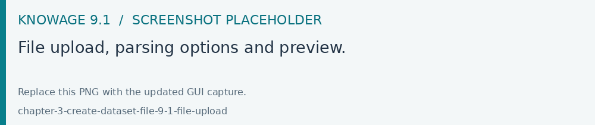
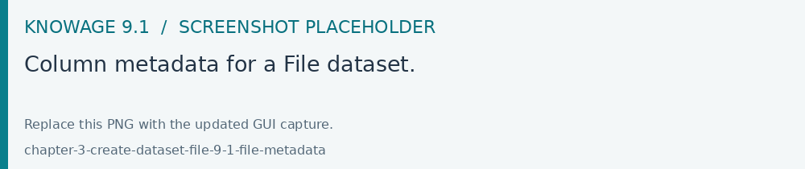

File datasets
A File dataset reads a tabular CSV or Excel file.
Create a dataset of type File and upload the source file.
Check the parsing options, including the delimiter, quotation character and date format where applicable.
Preview the parsed rows. Check column names, dates, decimal values and non-ASCII characters before continuing.
Review each column in Metadata, choosing its data type and Attribute or Measure role.
Save and reopen the dataset to verify the result.
When replacing a file used by existing analyses, preserve the expected column names and types or update the dependent documents accordingly.

Fig. 86 File upload, parsing options and preview.

Fig. 87 Column metadata for a File dataset.